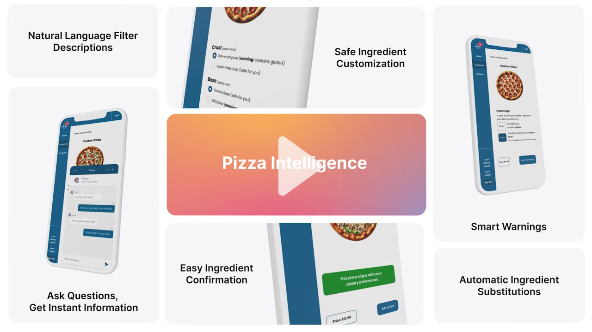

-
Hi! I'm Dieter.
Computer Science Student | Researcher | Software Engineer


-
Education
The University of British Columbia:
Bachelor of Science in Computer Science '25
Relevant Coursework:
Artificial Intelligence (CPSC 340 + 330), Computer Security (CPSC 436S), Networking (CPSC 317 + 416), Relational Databases (CPSC 304), Software Engineering (CPSC 310 + 427)
Stamford American International School:
International Baccalaureate Diploma '20
-
Coding Projects
BIOT Instrumentation:
Developed a ESP32 based wireless data collection system to monitor and control brewing processes.
AutoGit:
AI-driven tool to automate meaningful commit messages using Python and Flask.
Chore Organizer:
React and Flask app promoting household organization, hosted on a personal Linux server.
WeatherNLP:
Prolog-based natural language processing system for weather data queries.
-
Animation
Pizza Intelligence:
Semester-long project redesigning the Domino's ordering interface to better support users with dietary needs.
Conducted multiple rounds of prototyping and user studies to fit the interface to user needs.
Check out our final video here, animated using Adobe After Effects:

Stamford Thank You Video:
Inspired by Zoom usage during the pandemic, I animated a video compiling thank you messages to teachers from students in my highschool.
Check out the video here, animated using Adobe After Effects:
-
Work Experience
Researcher:
UBC X-Lab, focusing on latency optimization for multi-user VR telepresence using C++ and C#.
Teaching Assistant:
UBC CPSC 317, delivering and crafting tutorials on networking fundamentals. 1-on-1 debugging and teaching with students during office hours.
Unity Developer Intern:
VictoryXR, increasing multiplayer capacity by over 100% through rendering optimizations.
Debate Coach:
Fostering Debate Talent (FDT), coaching students 1-on-1 and in classes of 15-20 to form persuasive arguments in competitive debate.
-
Research
Co-authored research on latency-optimized multi-user VR telepresence using IPv6 multicast protocols (publication pending).
Utilized GDB and Valgrind for debugging multithreaded software, enhancing real-time performance.
-
Technical Skills
Languages: Java, C, C++, Python, JavaScript/TypeScript, R, C#, go, Haskell, Prolog
Technologies: REST APIs, Linux, Docker, Git, Unity, Cloudflare, Bash/Zsh scripting, NumPy, Torch
Tools: Adobe Suite, LaTeX, npm, Valgrind, GDB
-
Awards
National Honors Society President: Initiated tech-enabled academic programs for a community of 3,000+ students.
National Debate Team:Canadian Junior National Debate Champion, selected as a member for the Canadian National Debate Team.
-
Contact Information
Email: frehlichd@gmail.com
GitHub: github.com/frehlid